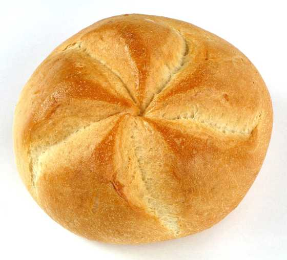
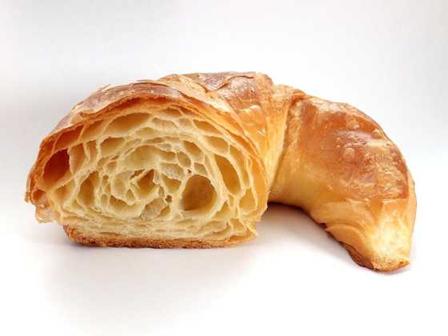

お店のこと
青森市の、小さなパン屋です
「パン屋 けいとう」は、青森県青森市浪岡にあるパン屋です。Instagramのプロフィールでは「青森県青森市の小さなパン屋です。」と紹介され、2021年10月28日にオープンしたと記されています。
店名の意味や、店づくりに込めた想いなどは、確認できた範囲では公表されていませんので、ここでは触れません。このページは「小さなパン屋」という言葉から、制作側が焦らず落ち着いた雰囲気をイメージして作った試作です。


パン
並ぶパンのこと
お店のパンの種類や価格、営業時間・定休日は現在準備中です。最新の情報はInstagramでご確認ください。下の写真はフリー素材のイメージで、お店の商品ではありません。




口コミ
こんな声が届くかもしれません
以下は制作側が作成した創作のイメージ例で、実在のお客様の声ではありません。
イメージ例こぢんまりした店内で、どれにしようか選ぶ時間も楽しいです。
イメージ例朝のうちに寄って、家族の分まで買って帰りました。
イメージ例素朴な味わいで、毎日の食卓に合います。